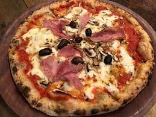

Capriciossa pizza recipe

Description
Capricciosa Pizzais a classic Italian pizza variety known for its delightful combination of flavorful ingredients. The name "Capricciosa" translates to "whim" or "whimsical" in English, suggesting a mix of ingredients chosen according to personal taste or creativity. Capricciosa pizza is celebrated for its diverse yet harmonious blend of ingredients, offering a symphony of flavors that cater to a variety of tastes. The combination of savory ham or prosciutto, earthy mushrooms, tangy artichokes, and other complementary elements creates a pizza that is both visually appealing and gastronomically satisfying.
Ingredients
- Tomato Sauce Base:
A classic tomato sauce provides the foundational flavor for the pizza.
- Mozzarella Cheese:
Generous layers of fresh mozzarella cheese contribute a creamy and gooey texture as it melts during baking.
- Mushrooms:
Sliced mushrooms, often sautéed beforehand, add an earthy and savory element to the pizza.
- Ham or Prosciutto:
High-quality ham or prosciutto is a common protein topping, providing a salty and savory contrast to the other ingredients.
- Artichokes:
Artichoke hearts, either marinated or grilled, offer a slightly tangy and distinctive flavor.
- Black Olives:
Black olives, pitted and sliced, contribute a briny and salty component to the overall taste profile.
- Fresh Basil:
Sprigs or torn leaves of fresh basil are often added after baking, imparting a fragrant and herbaceous note.
- Parmesan Cheese:
Grated Parmesan cheese may be sprinkled on top for an extra layer of rich, nutty flavor.
- Olive Oil:
A drizzle of high-quality olive oil adds a finishing touch, enhancing the flavors and providing a glossy appearance.
Steps
Prepare the Pizza Dough:
- In a bowl, dissolve sugar in warm water, then add yeast. Let it sit for 5-10 minutes until it becomes frothy.
- In a large mixing bowl, combine flour and salt. Make a well in the center and pour in the yeast mixture and olive oil.
- Mix until the dough comes together, then knead on a floured surface until smooth. Place in a greased bowl, cover with a cloth, and let it rise in a warm place for about 1-2 hours or until doubled in size.
Preheat the Oven:
Preheat your oven to the highest temperature it can go, typically around 475°F (245°C).
Roll Out the Dough:
Punch down the risen dough and roll it out on a floured surface to your desired thickness.
Assemble the Pizza:
- Transfer the rolled-out dough to a pizza stone or a baking sheet.
- Spread a layer of tomato sauce over the dough, leaving a small border around the edges.
- Place slices of fresh mozzarella evenly on top of the sauce.
- Distribute sauteed mushrooms, ham or prosciutto slices, sliced artichoke hearts, and black olives over the pizza.
Bake the Pizza:
Place the assembled pizza in the preheated oven and bake until the crust is golden and the cheese is bubbly and slightly browned.
Add Fresh Toppings:
Once out of the oven, add fresh basil leaves and sprinkle grated Parmesan cheese on top.
Drizzle with Olive Oil:
Finish the pizza by drizzling a bit of olive oil over the top for extra flavor.
Slice and Serve:
Let the pizza cool for a few minutes, then slice and serve.